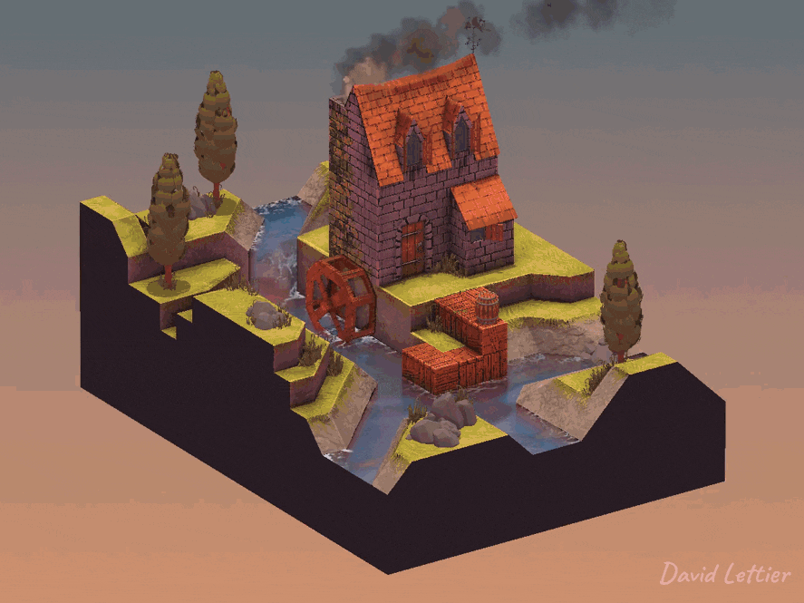
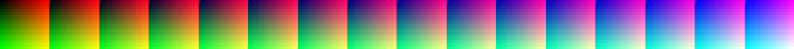
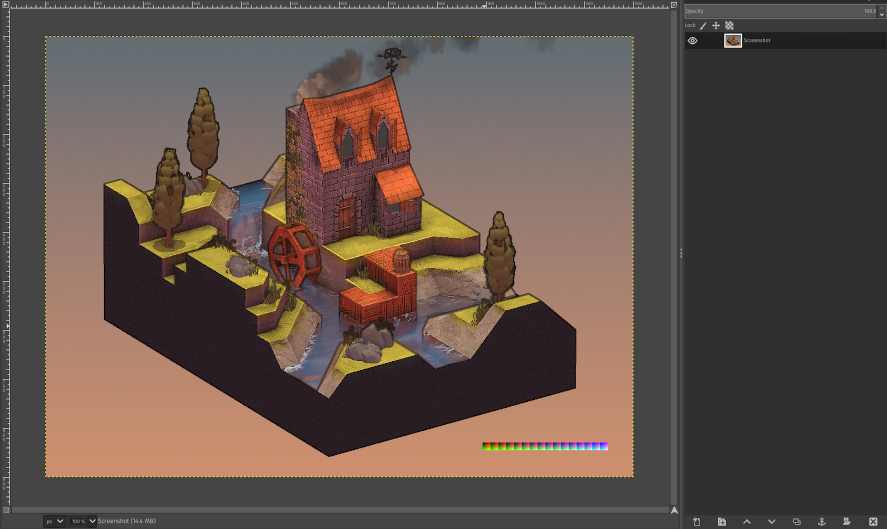
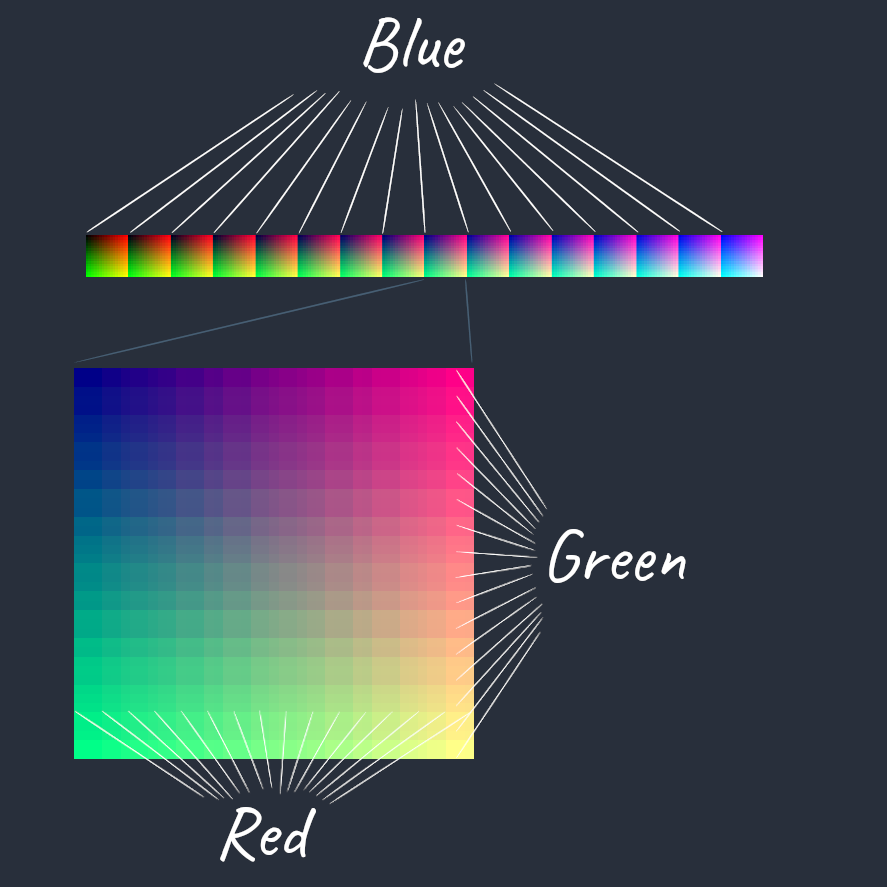
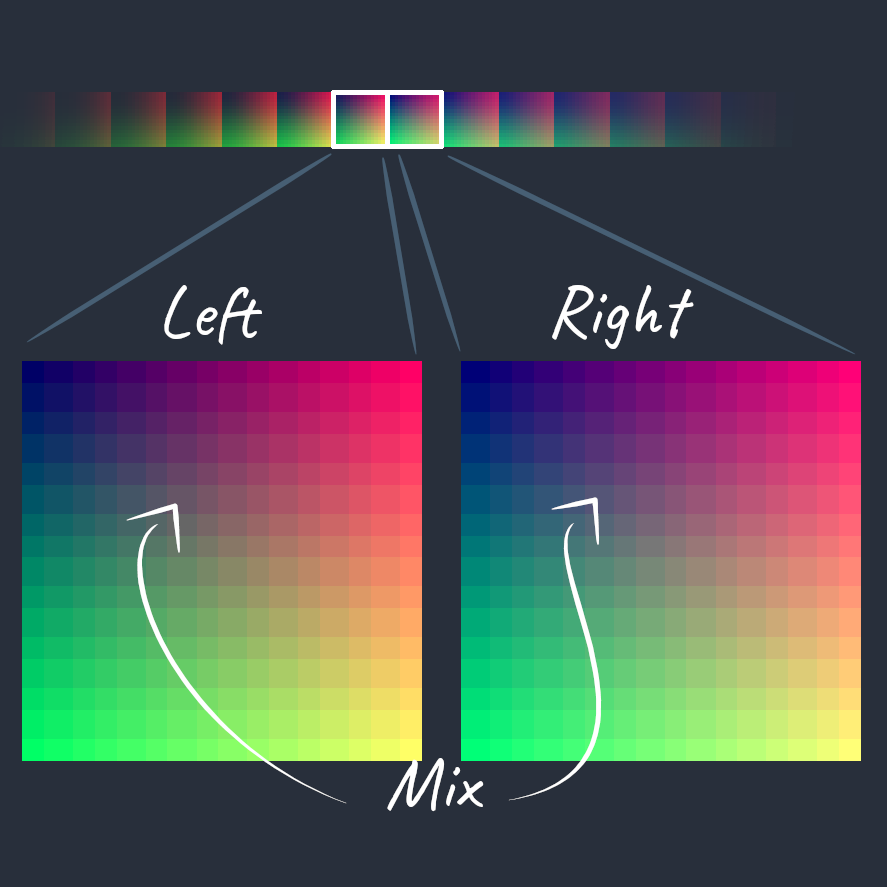

查找表（LUT）着色器允许你使用图像编辑器（例如 GIMP）来转换游戏中的颜色。
无论是进行色彩分级，还是将白天变成夜晚，LUT
着色器都是调整游戏视觉效果的方便工具。

开始之前，你需要找到一张“中性”LUT图片。
“中性”意味着它不会改变片元颜色。
LUT 图片尺寸需要是宽256像素，高16像素，且包含16个区块，
每个区块大小为16×16像素。
LUT 被划分成16个区块，
每个区块的蓝色通道不同。
从左到右，蓝色通道的强度逐渐增加，
你可以在每个区块左上角看到对应的蓝色值。
在每个区块内，
从左到右红色通道递增，
从上到下绿色通道递增。
第一个区块左上角是黑色，因为所有RGB通道都为0。
最后一个区块右下角是白色，因为所有RGB通道都为1。

拿到中性LUT后，截取一张游戏截图并用图像编辑器打开。
将中性LUT作为新图层叠加到截图上并合并图层。
你对截图颜色的任何调整都会同步改变LUT。
编辑完成后，仅选择LUT图层并保存为新图片。
这样你就获得了新的查找表，可以开始编写着色器了。
// ...
vec2 texSize = textureSize(colorTexture, 0).xy;
vec4 color = texture(colorTexture, gl_FragCoord.xy / texSize);
// ...LUT 着色器是一种屏幕空间技术，
因此需要在当前片元或屏幕位置采样场景颜色。
// ...
float u = floor(color.b * 15.0) / 15.0 * 240.0;
u = (floor(color.r * 15.0) / 15.0 * 15.0) + u;
u /= 255.0;
float v = ceil(color.g * 15.0);
v /= 15.0;
v = 1.0 - v;
// ...为了使用LUT转换当前片元颜色，
你需要将颜色映射到查找表纹理上的两个UV坐标。
第一个映射（如上所示）是到最近的左边或下边界区块位置，
第二个映射（如下所示）是到最近的右边或上边界区块位置。
最终将结合这两个映射来生成最终颜色变换。

红绿蓝三个通道各自映射到 LUT 中的16个可能值。
蓝色通道映射到16个区块左上角之一。
确定区块后，红色通道映射区块内的16个水平像素位置之一，
绿色通道映射区块内的16个垂直像素位置之一。
这三者决定了你需要从 LUT 采样的 UV 坐标。
// ...
u /= 255.0;
v /= 15.0;
v = 1.0 - v;
// ...计算最终U坐标时，除以255，因为LUT宽度为256像素，U坐标范围0到1。
计算最终V坐标时，除以15，因为LUT高度为16像素，V坐标范围0到1。
V坐标还需要用1减去它，
因为V在纹理中从底部0到顶部1，而绿色通道从顶部0到底部15。
// ...
vec3 left = texture(lookupTableTexture, vec2(u, v)).rgb;
// ...用UV坐标从查找表采样颜色，
这是最近左边区块的颜色。
// ...
u = ceil(color.b * 15.0) / 15.0 * 240.0;
u = (ceil(color.r * 15.0) / 15.0 * 15.0) + u;
u /= 255.0;
v = 1.0 - (ceil(color.g * 15.0) / 15.0);
vec3 right = texture(lookupTableTexture, vec2(u, v)).rgb;
// ...接下来计算最近右边区块的UV坐标。
注意这里用到了 ceil（向上取整），而不是之前的
floor（向下取整）。

// ...
color.r = mix(left.r, right.r, fract(color.r * 15.0));
color.g = mix(left.g, right.g, fract(color.g * 15.0));
color.b = mix(left.b, right.b, fract(color.b * 15.0));
// ...不是每个通道的值都恰好映射到16个位置中的一个。
例如，0.5的映射：
fract(0.123 * 15.0) 等于0.98。 // ...
fragColor = color;
// ...将片元颜色设置为混合后的最终颜色，完成颜色转换。
(C) 2020 David Lettier
lettier.com